扩散对偶：均匀态离散扩散背后的高斯扩散
The Diffusion Duality
GitHub star 为 2026-10-20 的快照。阅读状态、进度与收藏只保存在你的浏览器里。
逐节精读
这部分按论文的章节顺序，用本站自己的话把整篇论文从头讲一遍。读懂某个概念需要的背景知识，会在第一次用到它之前单独讲清楚（青色框）。每个结论都尽量说出“因为什么、所以什么”。论文以 CC BY 4.0 许可发布，所以原图直接放在讲到它的地方，并说明这张图怎么看；原图没有画到的概念，用本站的示意图补上。标“推算”的数字是本站根据论文数据算出来的，不是论文原话；标“本站数值计算”的曲线是本站按论文公式自己算出来的。本页依据 arXiv 第 3 版（v3，2025-12-19）；v3 和 v1 在理论部分的区别，见 3.3 节。每节末尾有英文原文的链接。
0 导读：这篇论文解决什么问题
扩散语言模型生成文字的方式和自回归模型不同：它先放一整段“噪声 token”，再一轮一轮地把整段改成通顺的句子。怎么“加噪”有两种主流做法。一种是掩码扩散：把 token 换成一个特殊的 [MASK] 符号，生成时把 [MASK] 一个个填回去，MDLM 和 LLaDA 都是这一类。另一种是均匀态扩散：把 token 随机换成词表里任意一个别的词，生成时从一串随机词出发，反复修改。掩码扩散的困惑度一直更好，所以成了主流；均匀态扩散有一个掩码扩散没有的长处——已经写下的词以后还能改，所以理论上更适合“少步生成”，但它一直训练得更差，也没有现成的办法把生成步数压下来。
这篇论文的核心发现是一个数学上的对应关系：对一个 one-hot 向量做普通的高斯扩散（像图像扩散那样加高斯噪声），每个时刻取一次 argmax，得到的 token 的分布，恰好就是某个均匀态离散扩散在对应时刻的分布。两边的噪声水平由一个函数 \(\mathcal{T}\) 一一对应。作者把这叫作“扩散对偶”（diffusion duality），方法取名 Duo。
有了这层对应，图像扩散里成熟的工具就有机会搬到均匀态离散扩散上。论文搬了两样：
- 训练：训练的前一半步数里，不把高斯向量硬取 argmax，而是给网络看一个温度很低的 softmax，同时只在一段窄的噪声区间里采样时间。这样损失有一点偏，但方差小得多。论文报告训练速度约快 2 倍，在 LM1B 和 OpenWebText 上刷新了均匀态扩散的困惑度纪录，零样本 7 个数据集里有 3 个低于自回归基线。
- 采样：图像扩散里“同一份噪声总是走到同一个终点”的确定性轨迹，在离散扩散里本来不存在；Duo 借高斯一侧的轨迹，再取 argmax，构造出离散的配对，从而把一致性蒸馏搬了过来（离散一致性蒸馏，DCD）。蒸馏 5 轮后，生成步数从 1024 降到 16 而生成质量基本不变；配合最后一步取 argmax 的 Greedy-Tail 采样器，8 步就够。
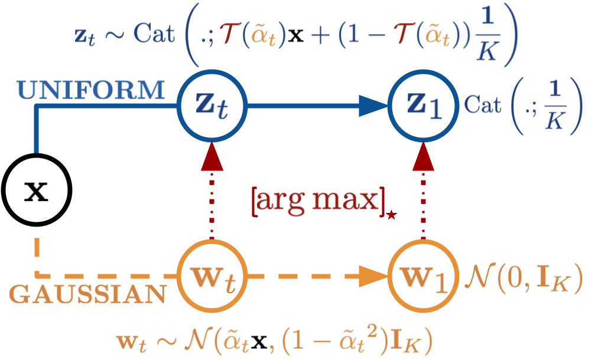
这篇论文的实验规模不大：所有模型都是约 1.7 亿参数的 Transformer，数据是 LM1B 和 OpenWebText，评价的是困惑度和无条件生成的样本质量，没有下游任务，也没有报告墙钟时间。读结果时要记住这个范围（6.5 节专门讨论）。
读完这部分，你应该能回答这几个问题：
- 掩码扩散和均匀态扩散的加噪方式有什么区别？为什么均匀态能“自我纠错”，却一直训练得更差？
- “高斯扩散取 argmax 就是均匀态扩散”具体是什么意思？函数 \(\mathcal{T}\) 从哪里来，为什么词表越大它越陡？
- 这个对偶在哪些地方不成立？论文的似然定理在 v1 和 v3 之间改了什么？
- 课程学习的“软输入”和“窄时间窗”各起什么作用？“训练快 2 倍”是在什么口径下说的？
- 离散一致性蒸馏的配对是怎么构造的？为什么掩码扩散做不了同样的事？
- “8 步生成”“超过自回归模型”这些数字，各自是在什么条件下测出来的？
1 引言：能改字的扩散，为什么一直输
扩散模型生成一段文字，要把同一个去噪网络反复调用很多次，每调用一次叫一次函数评估（number of function evaluations，NFE）。生成的速度主要由 NFE 决定。这篇论文的基线设置是：一段 1024 个 token 的文字用 1024 步生成，也就是平均每次网络调用只定下一个 token，和自回归模型一样慢，甚至更慢，因为扩散模型每一步都要对整段 1024 个位置做一次完整的双向计算，不能像自回归模型那样复用 KV 缓存。
所谓少步生成，就是用 8 步、16 步这样很少的网络调用生成同样长的文字。图像扩散里，把几百步压到几步的主要手段是蒸馏：用一个多步的“老师”模型教出一个少步的“学生”模型（2.3 节会讲其中的一致性蒸馏）。
作者先对比了两个领域的现状。图像、音频、视频上的高斯扩散模型，背后有一整套经过检验的技术：比“直接预测均值”更好的网络参数化方式、更快的训练方法、更高效的采样器，以及能把生成压到一步的蒸馏方法。离散扩散在文字、图结构（graph）、分子这些离散数据上效果比高斯扩散好，可是它的“工具箱”还很原始：网络基本都是直接预测干净数据（均值参数化），采样基本都是一步步做祖先采样。
已经有人尝试给掩码扩散做蒸馏：SDTT（Self-Distillation Through Time，Deschenaux 与 Gulcehre，2024；本文第二作者是它的第一作者）能把步数减少一些，但步数一少，质量下降得很厉害。作者认为根本原因在于掩码扩散缺少一个性质，他们称为“隐式”（implicit）性质：从噪声到数据存在一个确定性的映射。高斯扩散有概率流常微分方程（PF-ODE），给定一份初始噪声，沿 ODE 走到底，终点是确定的；很多少步蒸馏方法都建立在这条确定性轨迹上。掩码扩散的起点是“全部都是 [MASK]”，这是一个固定的状态，不含任何随机性；如果从它出发的生成过程也是确定的，那么永远只能生成同一句话。所以掩码扩散只能在生成过程中不断注入随机性，也就天然没有“噪声 → 数据”的确定性映射。
于是作者把注意力转向均匀态扩散（Uniform-state Diffusion Models，USDM）。它的起点是一串随机词，本身就带有随机性；它允许生成过程中随时改掉已经写下的词，不需要额外花网络调用去做“预测—校正”（predictor-corrector）。但它在历史上一直不如掩码扩散。论文由此提出两个问题：
- 能不能让均匀态扩散在困惑度上追上掩码扩散？
- 更重要的，能不能借用“底下那个高斯扩散”的确定性，让均匀态扩散做到少步生成？
论文的回答就是 Duo，它的贡献分三条：一，证明均匀态离散扩散可以由一个高斯扩散经 argmax 得到，从而把连续扩散的技巧引到离散扩散；二，用一个低方差的课程把均匀态扩散的训练速度提高一倍；三，把一致性蒸馏改造到离散扩散上，把采样加速两个数量级。
- “在 7 个零样本数据集中的 3 个上超过自回归模型”，比较的是困惑度；扩散模型报告的是上界，自回归模型是精确值；而且同一批数据集上 MDLM 和 SEDD 也超过了同一个自回归基线（6.2 节）。
- “采样加速两个数量级”指的是网络调用次数从 1024 降到 8（128 倍）或 16（64 倍），比较对象是 Duo 自己未蒸馏时的 1024 步，不是和自回归模型比墙钟时间。
2 背景：两种离散加噪、高斯扩散与一致性蒸馏
2.1 离散扩散：掩码与均匀两种加噪
把一个 token 表示成长度为 \(K\) 的 one-hot 向量 \(\mathbf{x}\)（\(K\) 是词表大小，只有对应的那一位是 1）。离散扩散的前向过程是：随着时间 \(t\) 从 0 走到 1，token 以越来越大的概率被“破坏”。D3PM 用转移矩阵来描述每一步怎么破坏；MDLM 之后流行一种更简单的写法，称为插值噪声框架：直接规定在时刻 \(t\)，带噪 token \(\mathbf{z}_t\) 的分布是“干净 token”和“某个先验分布 \(\boldsymbol{\pi}\)”按比例混合：
这里 \(\alpha_t\) 是一个随 \(t\) 严格下降的数，\(t=0\) 时约为 1（几乎不加噪），\(t=1\) 时约为 0（全是噪声）。可以把 \(\alpha_t\) 读作“这个 token 还保持原样的那部分概率”。
先验 \(\boldsymbol{\pi}\) 的两种选法，就是两大类离散扩散：
- 掩码（吸收态）：\(\boldsymbol{\pi}=\mathbf{m}\)，即一个特殊的 [MASK] token。token 要么保持原样，要么变成 [MASK]，一旦变成 [MASK] 就一直是 [MASK]（所以叫“吸收态”）。见 D3PM 精读 4.3 与 MDLM 精读 3.1。
- 均匀态：\(\boldsymbol{\pi}=\mathbf{1}/K\)，即词表上的均匀分布。token 要么保持原样，要么变成词表里随便哪个词（包括偶然变回它自己）。见 D3PM 精读 4.2。
举个数：词表只有 4 个词，\(\alpha_t=0.6\)。均匀态下，带噪 token 等于原词的概率是 \(0.6+0.4/4=0.7\)，等于另外三个词中每一个的概率都是 \(0.1\)（推算）。掩码态下，等于原词的概率是 0.6，变成 [MASK] 的概率是 0.4。
离散扩散的前向过程可以用一个线性常微分方程描述：各个 token 的概率向量 \(q_t\) 随时间的变化率等于一个“转移速率矩阵” \(Q_t\) 乘以 \(q_t\)，即 \(\frac{\mathrm{d}}{\mathrm{d}t}q_t=Q_tq_t\)。对均匀态扩散，这个矩阵是（Lou 等人和 Schiff 等人的结果）：
\(\alpha_t'\) 是 \(\alpha_t\) 对时间的导数，为负，所以前面的系数 \(-\alpha_t'/(K\alpha_t)\) 为正。方括号里的矩阵所有非对角元都是 1，对角元是 \(1-K\)，意思是：一个 token 以相同的正速率跳到任何一个别的词。3.1 节会看到，判断“argmax 之后是不是均匀态扩散”，就是看分布是否满足这个形式的方程。
反向过程。生成时要从 \(\mathbf{z}_t\) 往回走到更干净的 \(\mathbf{z}_s\)（\(s\lt t\)）。如果知道干净 token \(\mathbf{x}\)，这一步的真实后验 \(q_{s|t}(\cdot\mid\mathbf{z}_t,\mathbf{x})\) 有闭式：
其中 \(\alpha_{t|s}=\alpha_t/\alpha_s\)。分子的四项可以这样读：第二项是“保持当前的词 \(\mathbf{z}_t\)”，第三项是“跳回干净的词 \(\mathbf{x}\)”，第四项是“均匀地落到任意词上”，第一项只在当前词恰好就是干净词时出现，额外加强“保持”。生成时不知道 \(\mathbf{x}\)，就用一个神经网络 \(\mathbf{x}_\theta(\mathbf{z}_t,t)\) 输出的词表分布代替它，得到近似的反向一步 \(p^\theta_{s|t}(\cdot\mid\mathbf{z}_t)=q_{s|t}(\cdot\mid\mathbf{z}_t,\mathbf{x}=\mathbf{x}_\theta(\mathbf{z}_t,t))\)。从全是随机词的 \(\mathbf{z}_1\) 出发，一步步按这个分布抽样，叫祖先采样。
训练目标。网络 \(\mathbf{x}_\theta\) 的训练目标是负的证据下界（NELBO），它是数据负对数似然的一个上界；把它换算成困惑度，就是论文表格里扩散模型的“困惑度上界”。均匀态扩散的 NELBO 写成对时间和带噪 token 的期望：\(\mathrm{NELBO}=\mathbb{E}_{t\sim\mathcal{U}[0,1],\,\mathbf{z}_t\sim q_t}\,f(\mathbf{z}_t,\mathbf{x}_\theta(\mathbf{z}_t,t),\alpha_t;\mathbf{x})\)，其中 \(f\) 的具体形式在 3.4 节讲。
为什么均匀态能“自我纠错”。掩码扩散在反向过程中，一个位置一旦从 [MASK] 变成某个词，就再也不会变了；如果这个词猜错了，后面的步骤也改不回来。要纠错，得另外加“校正”步骤（predictor-corrector），每次校正都要多花网络调用（离散流匹配精读 2.6 讲过这类校正器）。均匀态扩散的反向过程允许任何位置在任何一步换成别的词，所以早先写错的词，后面的步骤有机会改掉，不需要额外的网络调用。论文附录图 5 把四种生成过程画在一起：
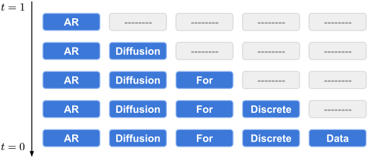
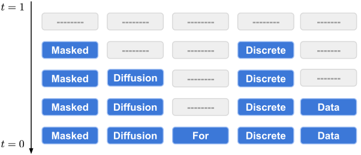
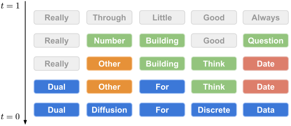
为什么均匀态一直训练得更差。前面的示意图已经给出了直觉：掩码态的噪声位置是“明牌”，模型只需要猜被遮的词；均匀态的噪声位置是“暗牌”，模型要同时判断“哪些词是被换掉的”和“原来是什么”，任务更难。表现在数字上：在 LM1B 上，D3PM 的均匀态版本困惑度上界为 137.9，吸收态版本为 76.9；SEDD 的均匀态版本为 40.3，吸收态版本为 32.7（数字取自 Duo 原文表 1；D3PM 的两个数是 LM1B 打包口径，SEDD 的两个数是不打包口径，只能各自组内比较，见 6.2 节）。
2.2 高斯扩散：在 one-hot 向量上加高斯噪声
图像扩散的前向过程是：把数据乘一个逐渐变小的系数，再加上逐渐变大的高斯噪声。这篇论文把同样的过程直接用在 one-hot 向量 \(\mathbf{x}\in\mathbb{R}^K\) 上（不是用在词嵌入上，这一点和 Diffusion-LM、Plaid 不同）：
带波浪号的 \(\tilde\alpha_t\) 是高斯一侧的噪声参数，从 1（\(t=0\)）降到 0（\(t=1\)），终点是标准正态 \(\mathcal{N}(0,\mathbf{I}_K)\)。为了和离散一侧区分，本页把高斯隐变量记作 \(\mathbf{w}_t\)，把信号系数和噪声标准差记作 \(\tilde\alpha_t\) 与 \(\tilde\sigma_t=\sqrt{1-\tilde\alpha_t^2}\)。两者之比 \(\tilde\alpha_t/\tilde\sigma_t\) 衡量信号压过噪声多少，它的平方 \(\nu(t)=\tilde\alpha_t^2/(1-\tilde\alpha_t^2)\) 叫信噪比（SNR）。
高斯扩散的训练目标（Kingma 等人的变分扩散模型 VDM 的连续时间形式）是一个按信噪比变化率加权的均方误差：网络 \(\mathbf{x}_\theta(\mathbf{w}_t,t)\) 从带噪向量预测干净向量，
\(\nu'(t)\) 是信噪比对时间的导数，为负，所以整个量为正（常数因子按原文写法）。
为什么要专门把高斯扩散搬到 one-hot 上？因为接下来的对偶需要“高斯向量的每一维对应词表里的一个词”，这样 argmax 选出的那一维就是一个 token。论文也承认，直接在离散数据上用高斯扩散，效果比离散扩散差；Duo 并不打算用高斯扩散来生成，而是把它当成离散扩散“底下”的一个辅助过程。
2.3 一致性蒸馏：为什么需要一条确定性轨迹
高斯扩散除了“每一步再加一点随机噪声”的随机采样器，还有确定性的采样器：可以证明，存在一个常微分方程（概率流 ODE，PF-ODE），沿着它从噪声走到数据，得到的样本分布和随机采样完全一样。DDIM 就是这个 ODE 的一种离散化。确定性意味着：给定一份初始噪声，终点是唯一确定的，于是“噪声”和“数据”之间有了一个一一对应。
一致性模型（Song 等人，2023）利用的就是这个对应：同一条 ODE 轨迹上的任意一点，都应该被映射到同一个终点。一致性蒸馏的做法是：拿一个训练好的多步扩散模型当老师；在一条轨迹上取一个较嘈杂的点 \(\mathbf{w}_t\)，用老师沿 ODE 走一小步得到稍干净的 \(\mathbf{w}_s\)；然后要求学生在 \(\mathbf{w}_t\) 上的预测，和老师（通常是学生参数的指数滑动平均，EMA）在 \(\mathbf{w}_s\) 上的预测一致：
\(d\) 是某种距离，\(\lambda(t)\) 是按时间加权。反复这样训练，学生就学会了“从轨迹上任何一点直接跳到终点”，生成只需要很少几步。本站旧版的 一致性模型拆解页 有更完整的介绍。
现在可以说清楚离散扩散为什么用不上这一套：离散空间里的状态变化是“跳”，不是连续地“流”，没有 ODE 可言；掩码扩散的起点又是固定的全 [MASK]，生成过程的随机性只能在中途注入。SDTT 的绕法是不要求确定性轨迹，而是让学生用较少的步数去匹配老师多步生成的输出分布（用 KL 散度衡量），多轮反复；但它在步数很少时退化严重。Duo 的思路是：既然均匀态扩散背后藏着一个高斯扩散，就借高斯一侧的确定性轨迹来构造训练对（第 5 节）。
3 扩散对偶：高斯扩散取 argmax，就是均匀态扩散
3.1 argmax 的推前：每个时刻的分布有闭式
取一个随机变量，对它做一个固定的函数变换，变换结果的分布就叫原分布在这个函数下的推前（pushforward），论文记作 \([\operatorname{argmax}]_\star\tilde q_t\)。最熟悉的例子是掷两颗骰子再求和：两颗骰子的联合分布是均匀的，求和之后得到的“点数和”分布就是推前，7 出现得最多。这里的函数是 argmax：输入一个 \(K\) 维实数向量 \(\mathbf{w}\)，输出它最大那一维对应的 one-hot 向量。
后面还会用到标准正态的密度 \(\phi(z)=e^{-z^2/2}/\sqrt{2\pi}\) 和分布函数 \(\Phi(z)\)（标准正态小于 \(z\) 的概率）。\(K-1\) 个独立的标准正态都小于 \(l\) 的概率是 \(\Phi(l)^{K-1}\)，也就是它们的最大值小于 \(l\) 的概率。
设干净的 token 是词表里的第 \(k\) 个词，\(\mathbf{w}_t=\tilde\alpha_t\mathbf{x}+\tilde\sigma_t\boldsymbol{\epsilon}\)，\(\boldsymbol{\epsilon}\sim\mathcal{N}(0,\mathbf{I}_K)\)。那么 \(\mathbf{w}_t\) 的第 \(k\) 维服从 \(\mathcal{N}(\tilde\alpha_t,\tilde\sigma_t^2)\)，其余每一维都服从 \(\mathcal{N}(0,\tilde\sigma_t^2)\)，彼此独立。argmax 选中正确的词，当且仅当第 \(k\) 维比其余 \(K-1\) 维都大。下面这张图用一个只有 5 个词的词表，把这件事画出来：
把所有维都除以 \(\tilde\sigma_t\)，问题变成：一个服从 \(\mathcal{N}(r,1)\) 的数，比 \(K-1\) 个独立标准正态的最大值还大的概率是多少，其中 \(r=\tilde\alpha_t/\tilde\sigma_t\)。对正确那一维的取值 \(z\) 积分，就得到：
剩下的概率怎么分给错误的词？因为 \(K-1\) 个错误维的分布完全一样，它们当选的概率也一样，各得 \((1-P(\mathbf{z}_t=\mathbf{x}))/(K-1)\)。而“正确的词占一份概率、其余词均分剩下的”这种分布，总能写成 \(\mathrm{Cat}(\alpha\mathbf{x}+(1-\alpha)\mathbf{1}/K)\) 的样子，只要取 \(\alpha=(K\,P(\mathbf{z}_t=\mathbf{x})-1)/(K-1)\)。于是得到论文的式 (10)–(11)：
论文把 \(\mathcal{T}\) 叫作扩散变换算子（Diffusion Transformation operator）。它的两端很好检查：\(\tilde\alpha_t=0\) 时所有维同分布，每个词当选的概率都是 \(1/K\)，\(\mathcal{T}=0\)；\(\tilde\alpha_t\to1\) 时噪声消失，正确的词必然当选，\(\mathcal{T}\to1\)；中间单调上升。这个积分没有初等的闭式，训练时作者预先在 10 万个 \(\tilde\alpha_t\) 上算好 \(\mathcal{T}(\tilde\alpha_t)\) 存成表，用时查表（官方代码 integral/*.pkl，连导数一起缓存）。
只看每个时刻的分布形状还不够，还要看它随时间怎么变。附录 A.2 对上面的分布求时间导数，得到：
（这里的 \(\mathcal{T}'\) 指 \(\mathcal{T}(\tilde\alpha_t)\) 对时间的导数。）这和 2.1 节均匀态扩散的方程形式完全一样，只是把 \(\alpha_t\) 换成了 \(\mathcal{T}(\tilde\alpha_t)\)。所以结论是：
读作：对噪声参数为 \(\tilde\alpha_t\) 的高斯扩散取 argmax，得到噪声参数为 \(\alpha_t=\mathcal{T}(\tilde\alpha_t)\) 的均匀态离散扩散。这就是“扩散对偶”。
\(\mathcal{T}\) 的形状为什么重要。正确的那一维要胜出，得超过 \(K-1\) 个噪声维里最大的那个；而 \(K-1\) 个标准正态的最大值，随 \(K\) 增大会越来越大（大约按 \(\sqrt{2\ln K}\) 增长）。所以词表越大，需要的信号越强，\(\mathcal{T}\) 曲线越往右挤，也越陡。下面这张图是本站按式 (11) 数值积分画的：
这张图在第 4 节会派上大用场：对 3 万多词的词表，高斯一侧只要在一段很窄的噪声区间里变化，离散一侧的 \(\alpha_t\) 就能从接近 0 一直走到接近 1。换句话说，离散一侧“几乎全是噪声”的时候，高斯向量里其实还留着相当强的信号，只是被 argmax 一刀切掉了。
3.2 对偶只对边缘分布成立：取了 argmax 的轨迹不是离散扩散
上面的结论说的是“每一个时刻单独看，分布一样”。那么，取一条高斯轨迹 \(\{\mathbf{w}_t\}\)，每个时刻都取 argmax，得到的一串 token \(\{\mathbf{z}_t\}\) 是不是一条均匀态扩散的轨迹？附录 A.3（v2 起新增）证明：不是。
原因可以用一句话说清楚。均匀态扩散是马尔可夫的：已知 \(\mathbf{z}_s\)，下一刻 \(\mathbf{z}_t\) 跳到任何一个“别的词”的概率都相同。但在高斯轨迹上，知道 \(\mathbf{w}_s\) 比只知道 \(\mathbf{z}_s\) 多了很多信息：\(\mathbf{w}_s\) 里数值排第二、第三的那些词，在下一刻更有可能被噪声推上第一。所以给定 \(\mathbf{w}_s\) 时，各个“别的词”当选的概率不相等；只有在 \(\mathbf{w}_s\) 除正确维外各维恰好相等这种概率为零的情况下才相等。于是 argmax 之后的转移不满足均匀态扩散的转移核（原文式 40）。
这一点决定了对偶能用在哪里、不能用在哪里：
- 能用：扩散模型的训练目标 NELBO 是对“单个时刻”的期望（2.1 节），只依赖每个时刻 \(\mathbf{z}_t\) 的分布。既然这个分布可以由高斯一侧取 argmax 得到，就可以用高斯隐变量来采样 \(\mathbf{z}_t\)、计算同一个 NELBO（第 4 节的出发点）。
- 不能直接用：不能指望“把一条高斯生成轨迹逐点取 argmax”就得到一条合法的离散生成轨迹。第 5 节的蒸馏恰恰故意利用了这种非马尔可夫的离散轨迹，用它来构造训练对，而不是用它来生成。
3.3 两个定理：保边缘的离散采样器与似然比较
信息论里有一条很直观的结论：对两个分布 \(q\) 和 \(p\) 做同一个变换（或同一个随机“处理”），变换后的两个分布不会比变换前更容易区分。用 KL 散度写就是 \(D_{\mathrm{KL}}([k]_\star q\,\|\,[k]_\star p)\le D_{\mathrm{KL}}(q\,\|\,p)\)。比如把两张照片都缩成很小的缩略图，它们只会变得更难区分，不会更容易。
定理 3.1：离散一侧有一个“跟随”高斯一侧的反向过程。假设已经有一个高斯扩散的近似反向过程 \(\bar p^\theta\)（每个时刻的分布记作 \(\bar p^\theta_t\)）。定理说，可以在离散空间里定义一个反向过程，使它每个时刻的分布都恰好是高斯一侧取 argmax 的结果，即 \(p^\theta_t=[\operatorname{argmax}]_\star\bar p^\theta_t\) 对所有 \(t\) 成立。这个离散反向一步的转移是：
用话说：当前的 token 是 \(\mathbf{z}_t\)，但不知道它背后的高斯向量 \(\mathbf{w}_t\) 具体是多少；那就把所有“取 argmax 后等于 \(\mathbf{z}_t\)”的 \(\mathbf{w}_t\) 按它们的概率加权平均，对每个 \(\mathbf{w}_t\) 走一步高斯反向，再对结果取 argmax。证明用归纳法：\(t=1\) 时，高斯先验 \(\mathcal{N}(0,\mathbf{I}_K)\) 取 argmax 恰好是均匀分布，成立；假设在 \(t\) 成立，推前运算是线性的，代进去就得到 \(s=t-\delta\) 也成立。附录 A.4 还给出了一个具体的离散去噪网络 \(\mathbf{x}_\theta\) 的表达式（原文式 44），使得普通的均匀态祖先采样恰好等于这个转移。这条定理的意义在于，离散去噪网络可以用高斯一侧的去噪器来表达，为把 \(\epsilon\) 参数化、\(v\) 参数化等高斯技巧搬进离散去噪器留了接口（论文在 7.2 节“未来工作”里提到）；论文本身的实验没有用到这个采样器。
定理 3.2：离散一侧的似然不低于高斯一侧。设两种采样器（高斯的 \(\bar p^\theta\) 和按定理 3.1 跟随它的离散 \(p^\theta\)）最终给出的数据分布分别是 \(\bar p^\theta_{\text{data}}\) 和 \(p^\theta_{\text{data}}\)，那么
证明就是上面的数据处理不等式：真实数据本身就是 one-hot，取 argmax 不改变它；模型分布取 argmax 之后，和真实数据之间的 KL 散度只会变小；KL 变小等价于在真实数据上的期望对数似然变大。作者由此得出设计上的结论：既然离散一侧至少不差，就让去噪网络直接处理离散的 token，训练和评测都用离散扩散的 NELBO。
- v1（2025-06-12）的定理 3.1 写的是“均匀态离散扩散的 ELBO 比其下高斯扩散的 ELBO 更紧”，即 \(\log p_\theta(\mathbf{x})\ge\mathrm{ELBO}_{\text{离散}}\ge\mathrm{ELBO}_{\text{高斯}}\)，证明（附录 A.3）把两条链的联合后验 KL 用两种方式拆开比较。
- v2（2025-09-14）结论不变，证明改用数据处理不等式；同时新增附录 A.3，即上一小节“取 argmax 的轨迹不是离散扩散”的证明。
- v3（2025-12-19），arXiv 备注写“改进了理论、表述更清楚、新增未来工作一节”：原来那条定理被拆成现在的定理 3.1（保边缘的离散反向过程）和定理 3.2（比较两种采样器给出的数据似然，而不再比较两个 ELBO）；新增 7.1 局限与 7.2 未来工作；消融表从附录移到正文（表 3）。本站逐表核对了 v1 与 v3 的表 1–7，实验数字完全相同。
本站的理解（论文没有这样解释）：v1/v2 的说法隐含了“把高斯反向过程取 argmax，得到的仍是一个离散扩散的反向马尔可夫链”，而 v2 自己新增的附录 A.3 恰恰说明 argmax 之后的轨迹不是马尔可夫的；v3 先构造一个只保证边缘分布一致的离散反向过程，再只比较最终的数据分布，就绕开了这个问题。
- 它比较的是“同一个高斯去噪器诱导出的两种采样器”，不是“训练好的 Duo”和“训练好的某个高斯扩散语言模型（如 Plaid）”。后者的比较是实验问题，见 6.2 节。
- 证明里把高斯模型在 one-hot 点上的密度直接当作似然，与离散分布的概率放在同一个不等式里。严格说，高斯模型要给离散数据打分，还需要一个“取整”或解码的步骤（例如 VDM 的做法）。本站把这条定理读作一个方向性的论证：“在离散空间里建模至少不会更差”，而不是一个可以拿来比较具体数值的结论；论文的实验也没有用它来比数字。
3.4 Duo 本身：采样器与 Rao-Blackwell 化的训练目标
到这里，Duo 作为一个模型，其实就是一个均匀态离散扩散语言模型：输入带噪的 token 序列和时间，输出每个位置的词表分布 \(\mathbf{x}_\theta\)。它和此前的均匀态模型 UDLM（Schiff 等人，2025）的区别，在于训练目标的写法、训练时用的课程（第 4 节），以及可选的蒸馏（第 5 节）。
自回归模型常用核采样（nucleus sampling，top-p）：每一步只在概率最高、累计概率达到 \(p\) 的那一小撮词里抽样，砍掉长尾的低概率词。这样生成的文字更通顺，但多样性下降。衡量多样性的一个常用指标是样本熵：统计一段生成文字里各个 token 出现的频率，算这个频率分布的熵；熵越低，用词越单调、重复越多。
采样器。Duo 默认用均匀态扩散的祖先采样（2.1 节）。作者另外提出一个 Greedy-Tail 采样器，只改最后一步：最后一步不再从 \(p^\theta_{0|\delta}\) 中抽样，而是直接取概率最大的词（\(\delta\) 是时间步长）。它的作用类似核采样：去掉最后一步的随机性，生成困惑度变好，样本熵变低。后面所有带“Greedy-Tail”的数字，都要和熵一起看。
训练目标。UDLM 给出的均匀态 NELBO（原文式 49）写成每个位置一个损失项 \(f(\mathbf{z}_t,\mathbf{x}_\theta,\alpha_t;\mathbf{x})\)。为了看懂它，先定义两个向量：\(\bar{\mathbf{x}}=K\alpha_t\mathbf{x}+(1-\alpha_t)\mathbf{1}\)，它正比于“已知干净词是 \(\mathbf{x}\) 时，带噪词取各个值的概率”；\(\bar{\mathbf{x}}_\theta=K\alpha_t\mathbf{x}_\theta+(1-\alpha_t)\mathbf{1}\)，是把干净词换成网络预测后的同一个量。记当前带噪词的下标为 \(i\)，令 \(a_j=\bar x_j/\bar x_i\)、\(b_j=(\bar x_\theta)_j/(\bar x_\theta)_i\)，它们分别是“带噪词是 \(j\) 而不是 \(i\)”的真实概率比和模型给出的概率比。把原文式 (49) 整理一下（本站推导），损失项可以写成：
方括号里每一项都不小于 0，只有模型的概率比等于真实概率比时才为 0；系数 \(-\alpha_t'/(K\alpha_t)\) 为正。这正是 SEDD 的 score entropy 的形式：均匀态扩散的 NELBO，本质上是在让网络学对“各个词相对于当前词的概率比”。
直接按式 (49) 计算，要为每个位置显式地造出 \(K\) 维的 \(\bar{\mathbf{x}}\) 并逐元素做比值和对数。对 OWT，序列长 1024、词表 50,257，一条序列就是约 5,100 万个数（推算）。Duo 利用 \(\bar{\mathbf{x}}\) 只有两种取值（干净词那一维是 \(K\alpha_t+1-\alpha_t\)，其余都是 \(1-\alpha_t\)）这一点，把求和化简成只需要“网络输出在两个位置上的值”（当前带噪词 \(i\) 和干净词 \(m\)）加上“网络输出取对数后在整个词表上的和”（原文式 17）：
其中 \(m\) 是干净词的下标，\(\kappa_t=(1-\alpha_t)/(K\alpha_t+1-\alpha_t)\)，\(c_1=\kappa_t\mathbf{1}[\mathbf{z}_t=\mathbf{x}]+\mathbf{1}[\mathbf{z}_t\ne\mathbf{x}]\)，\(c_2=(K-1)\kappa_t\mathbf{1}[\mathbf{z}_t=\mathbf{x}]-\mathbf{1}[\mathbf{z}_t\ne\mathbf{x}]/\kappa_t\)，\(\bar x_i\) 在当前词等于干净词时是 \(K\alpha_t+1-\alpha_t\)，否则是 \(1-\alpha_t\)。整句话的损失是各个位置之和（原文式 18），因为前向和反向过程都按位置独立分解。
algo.py 的 nll_per_token）和原文式 (49) 在随机输入上对照：两者的方括号逐项相等，而且方括号恒不大于 0（上面的推导说明了原因）。代码里乘的系数是 \(\alpha_t'/(K\alpha_t)\)（负数），所以损失非负；原文式 (17) 和 (49) 印的是 \(-\alpha_t'/(K\alpha_t)\)，多了一个负号。本页按代码写。英文原文 §3 ↗ · 附录 A（推导与证明）↗ · 相关：旧版拆解·对偶
4 应用一：借高斯一侧做低方差的课程训练
4.1 先把离散的训练目标写成高斯隐变量上的期望
第一步只是换一种方式采样 \(\mathbf{z}_t\)。离散扩散的 NELBO 是对 \(\mathbf{z}_t\sim q_t\) 的期望；3.1 节说明，\(\mathbf{z}_t\) 的分布等于先采 \(\mathbf{w}_t\sim\tilde q_t\) 再取 argmax，只要两边的噪声参数满足 \(\alpha_t=\mathcal{T}(\tilde\alpha_t)\)。所以同一个 NELBO 可以写成（原文式 19）：
上标 \(\ell\) 表示序列中的第 \(\ell\) 个位置，\(L\) 是序列长度。数值上它和原来的 NELBO 完全一样，只是采样路径不同。作者做了检查（附录 B.1）：在 LM1B 上训练好的模型，分别用离散采样和高斯采样估计 NELBO（每个数据点 1000 个时间样本，对偶采样），得到同一个困惑度 33.7。这一步本身不带来任何好处，它的作用是把 argmax 摆到了明面上，下一步就可以动它。
4.2 把 argmax 换成低温 softmax，并只在一段窄的时间窗里训练
课程学习（Bengio 等人，2009）指先让模型学简单的样本，再逐渐过渡到难的样本，像学生先做例题再做难题。
温度 softmax：\(\mathrm{softmax}(\mathbf{w}/\tau)\) 在温度 \(\tau\) 很大时接近均匀分布，在 \(\tau\to0^+\) 时变成 one-hot 的 argmax，即 \(\operatorname{argmax}(\mathbf{w})=\lim_{\tau\to0^+}\mathrm{softmax}(\mathbf{w}/\tau)\)。Gumbel-softmax（Jang 等人；Maddison 等人，2017）用它来近似离散采样、让梯度能穿过 argmax。这里的用途不同：不是为了传梯度，而是为了让网络的输入保留一点“各个词差多少”的信息。
偏差—方差权衡：训练用的损失是对一个随机量取平均。损失的估计如果“有偏”，就是它的期望不等于真正想优化的目标；如果“方差大”，就是每个小批量算出来的值和梯度上下乱跳，优化走得慢。有时故意接受一点偏差，换来小得多的方差，整体反而学得更快。
为什么 argmax 是瓶颈。3.1 节的曲线说明，对 3 万多词的词表，高斯一侧只要信号略强一点，离散一侧就从“几乎全是噪声”变成“几乎全是原词”。作者指出一个反直觉的现象：在这段很窄的区间里，高斯向量看起来其实和干净的 one-hot 很像（正确那一维明显偏大），可离散的 NELBO 并没有因此变小。原因是 argmax 对扰动极其敏感：正确那一维只要被某个噪声维以微弱的差距超过，argmax 就会给出一个完全不同的词，“差一点就对了”这个信息被一刀切掉。所以作者让网络直接看 \(\mathrm{softmax}(\mathbf{w}^\ell_t/\tau)\)：保留更多信号，重建干净词更容易，温度 \(\tau\) 就成了控制题目难度的旋钮。
网络怎么吃“软”输入。普通的网络输入是 token 下标，第一层按下标查词嵌入。Duo 的网络同时支持两种输入（附录 C.2）：离散输入照常查表；软输入是一个词表上的概率向量，第一层用它对整张词嵌入表做加权平均（“软查表”），官方代码就是 \(\mathrm{softmax}(\cdot)\) 乘以嵌入矩阵。
训练损失。课程阶段的损失是（原文式 21）：
和式 (19) 相比改了两处。第一，网络的输入从 argmax 换成了温度 \(\tau\) 的 softmax，但损失项里用来计算的“当前词”仍然是 argmax 得到的硬 token。第二，时间不再在 \([0,1]\) 上均匀采样，而是只在一个子区间 \([\beta,\gamma]\) 里采样，使高斯参数落在一段窄区间内；作者沿用了 BD3-LM 的“裁剪噪声调度” 的思路，不取 \(\tilde\alpha_t=1\) 附近，因为那里几乎不提供训练信号。附录 C.7 补充了第二个理由：损失按 \(\alpha_t'\) 加权，而 \(\mathcal{T}\) 在窄区间外几乎是平的，那里 \(\alpha_t'\approx0\)，采到的样本几乎不贡献梯度。作者把区间选成让离散一侧的 \(\alpha_t=\mathcal{T}(\tilde\alpha_t)\) 落在 \([0.05,0.95]\)，对 GPT-2 和 BERT 两种分词器都对应 \([\beta,\gamma]=[0.03,0.15]\)。
这个损失不是一个合法的 NELBO：网络看到的是连续的软输入，而损失是为离散扩散定义的。只有在 \(\tau\to0^+\)、且 \(\beta=0\)、\(\gamma=1\) 的极限下，它才回到真正的 NELBO。所以评测时一律按离散扩散模型、用真正的 NELBO（式 18，\(\alpha_t=1-t\)）计算困惑度（附录 C.4）。
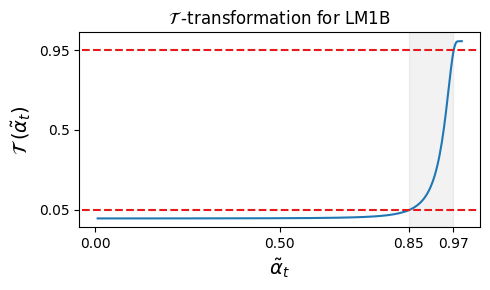
按原文式 (7) 的写法，\(\tilde\alpha_t\) 是高斯均值的系数，噪声方差是 \(1-\tilde\alpha_t^2\)。本站按式 (11) 数值积分，\(K=30{,}522\) 时 \(\mathcal{T}(0.85)\approx0.008\)、\(\mathcal{T}(0.97)\approx0.45\)，和图 6 对不上；如果把 0.85 和 0.97 当成 \(\tilde\alpha_t^2\)（信号所占的方差比例），则得到 0.047 和 0.934，和图 6 以及附录 C.7 的 \([0.05,0.95]\) 吻合。官方代码（algo.py 的 DUO 类）用 \(\gamma=\log(\tilde\sigma_t^2/\tilde\alpha_t^2)\) 参数化，即 \(\tilde\alpha_t^2=\mathrm{sigmoid}(-\gamma)\)，并在窗口内让 \(\gamma\) 随 \(t\) 线性变化：LM1B 训练脚本的 \(\gamma\in[-3.5,-1.75]\) 对应 \(\tilde\alpha_t^2\in[0.852,0.971]\)，OWT 训练脚本的 \(\gamma\in[-3.55,-1.85]\) 对应 \(\tilde\alpha_t^2\in[0.864,0.972]\)（推算）。而本站算出 \(\mathcal{T}\) 穿过 0.05 和 0.95 的位置，\(K=30{,}522\) 时是 \(\tilde\alpha_t^2=0.853\) 与 \(0.972\)，\(K=50{,}257\) 时是 0.865 与 0.973，与代码的窗口几乎完全对上。结论：§4.1.2、附录 C.7 和图 6 里的“\(\tilde\alpha_t\in[0.85,0.97]\)”按式 (7) 的记号应读作 \(\tilde\alpha_t^2\)，窗口内的调度在代码里也不是 \(\tilde\alpha_t=1-t\)。这不影响任何结论，只在复现时需要注意。
完整的训练日程。论文的设置是：前 50 万步用课程损失 (21)，温度固定为 \(\tau=0.001\)，时间窗 \([\beta,\gamma]=[0.03,0.15]\)；后 50 万步令 \(\tau=0\)，换回真正的 NELBO (18)，网络输入回到离散 token，时间在 \([0,1]\) 上采样，一共训练 100 万步。官方 OWT 训练脚本与此一致（gumbel_tau_log10=-3，课程在第 50 万步结束）。
输入 softmax(w/τ)，τ = 0.001；只在 t ∈ [0.03, 0.15] 采样；有偏损失 (21)50 万 – 100 万步：真正的 NELBO (18)
输入离散 token；t ∈ [0, 1]
- “课程”其实同时做了两件事：给网络看软输入，以及把时间限制在一个窄窗口里。论文的对照（图 8、表 3、表 4）都是“有课程”对“没有课程（\(\tau=0\)、时间取满 \([0,1]\)）”，没有把两件事分开做消融。附录 C.7 自己就说，限制时间窗“显著降低了训练方差”。
- \(\tau=0.001\) 时，软输入和硬 argmax 几乎没有差别。本站用 numpy 做了一个小模拟（词表 30,522 或 50,257，\(\tilde\alpha_t^2\) 取窗口内的 0.85 到 0.97，每组 400 个样本）：\(\mathrm{softmax}(\mathbf{w}/0.001)\) 和 argmax 的 one-hot 之间的 L1 距离平均只有约 0.002–0.019，相当于不到 1% 的概率质量换了位置；argmax 选错时，正确词在软输入里分到的权重中位数约为 0。\(\tau=0.01\) 时差别才明显（L1 距离约 0.03–0.16）。所以在论文的设置下，方差下降有多少来自软输入、多少来自时间窗，目前无法从论文判断（本站推算，不是论文结论）。
- 课程阶段每一步更贵。软输入要为每个位置造一个完整的 \(K\) 维高斯向量：OWT 一条序列是 1024 × 50,257 ≈ 5,100 万个数，单精度约 206 MB，每张卡一批 32 条就是约 6.6 GB（推算）。所以“训练快 2 倍”是按步数算的，不是按墙钟时间；续作 Ψ-samplers 专门做了一个更省的课程，摘要称训练时间减少 25%、显存减少 33%（第 8 节）。
- \(\tau\) 和课程长度是两个需要调的超参数。论文在 7.1 节承认，LM1B 和 OWT 上用同一套设置可行，换到别的领域可能要重新调；如果没法调，作者建议不用课程，只用式 (17) 的目标。
英文原文 §4.1 ↗ · 附录 C（实验细节）↗ · 相关：旧版拆解·课程学习
5 应用二：离散一致性蒸馏（DCD）
5.1 借来的确定性轨迹：最优去噪器下的直线，再取 argmax
直接的想法是：用训练好的 Duo 网络当去噪器，在高斯空间里解 PF-ODE。但这行不通，因为训练结束时温度已经降到 0，Duo 网络只认离散 token，不能在高斯空间里给出去噪方向。作者的绕法是改用最优去噪器：假设去噪器总能准确说出干净数据，\(\mathbf{x}_\theta(\mathbf{w}_t,t)=\mathbf{x}\)。代入 DDIM 的更新公式 \(\mathbf{w}_s=\tilde\alpha_s\mathbf{x}_\theta+\tilde\sigma_s\boldsymbol\epsilon_\theta\)（其中 \(\boldsymbol\epsilon_\theta=(\mathbf{w}_t-\tilde\alpha_t\mathbf{x}_\theta)/\tilde\sigma_t\) 是由当前点反推出的噪声），得到 \(\boldsymbol\epsilon_\theta=\boldsymbol\epsilon\)、\(\mathbf{w}_s=\tilde\alpha_s\mathbf{x}+\tilde\sigma_s\boldsymbol\epsilon\)。也就是说，给定一对 \((\mathbf{x},\boldsymbol\epsilon)\)，这条“最优 PF-ODE 轨迹”就是两者之间的插值，所有时刻共用同一份噪声 \(\boldsymbol\epsilon\)（附录 B.2.1）。把它逐个位置取 argmax，就得到论文所说的确定性离散轨迹（Deterministic Discrete Trajectory，DDT，原文式 22）：
这条离散轨迹长什么样。附录 A.7 指出，轨迹上每个位置只会取两个值：干净词 \(\mathbf{x}^\ell\)，或者一个由噪声决定的“噪声词”。本站把原因推一遍：把式子除以 \(\tilde\sigma_t\)，取 argmax 的对象变成 \(r(t)\,\mathbf{x}+\boldsymbol\epsilon\)，其中 \(r(t)=\tilde\alpha_t/\tilde\sigma_t\) 随 \(t\) 增大而单调减小。干净词那一维是 \(r(t)+\epsilon_k\)，其余各维就是 \(\epsilon_j\)，与时间无关。所以：
- 如果 \(r(t)\) 大于阈值 \(c=\max_{j\ne k}\epsilon_j-\epsilon_k\)，argmax 是干净词；否则是 \(\arg\max_{j\ne k}\epsilon_j\) 那个固定的噪声词。
- 阈值 \(c\) 只由这个位置的噪声决定，而 \(r(t)\) 单调，所以每个位置都有一个确定的“翻转时刻”：在它之前（更嘈杂）是噪声词，之后（更干净）是干净词，只翻一次，翻过去就不再变。
- 到某个时刻 \(t\) 为止已经翻成干净词的概率，就是 \(P(c\lt r(t))\)，恰好等于 3.1 节的 \(\mathcal{T}(\tilde\alpha_t)+(1-\mathcal{T}(\tilde\alpha_t))/K\)：单个时刻看，它仍是均匀态扩散的分布；整条轨迹看，它却像掩码扩散那样“定下就不改”。这正好印证了 3.2 节“边缘对应、轨迹不对应”。
| t=1 | t=0 | |||||||
|---|---|---|---|---|---|---|---|---|
| 位置 1（阈值较高） | ||||||||
| 位置 2 | ||||||||
| 位置 3（阈值最高） | ||||||||
| 位置 4（阈值为负） | ||||||||
| 位置 5 |
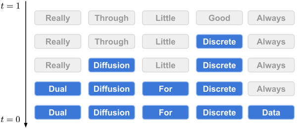
5.2 蒸馏：学生看更嘈杂的一点，去对齐老师在更干净一点上的预测
有了确定性轨迹，一致性蒸馏的配方就能照搬。每个训练步：采一句干净的话 \(\mathbf{x}^{1:L}\)、一个时间 \(t\)、每个位置一份噪声 \(\boldsymbol\epsilon^\ell\)；令 \(s=t-\delta\)；用同一份噪声算出 \(\mathbf{z}^{1:L}_s\) 和 \(\mathbf{z}^{1:L}_t\)（两者都是确定性离散轨迹上的点，\(\mathbf{z}_t\) 更嘈杂）。学生网络读 \(\mathbf{z}_t\)，老师网络读 \(\mathbf{z}_s\)，各自输出每个位置上干净词的分布，按 SDTT 的做法用 KL 散度让学生向老师靠拢（原文式 23）：
直觉是：老师站在更干净的位置上，看到的信息更多，预测更准；学生要在更嘈杂的位置上就给出同样的预测，相当于学会“往前跳一步”。整个蒸馏分 \(N\) 轮，每轮 \(M\) 步（算法 1）：每轮开始时，把老师更新成学生当前的权重；每轮结束时，把步长 \(\delta\) 翻倍，让学生学着跳更远。论文的设置是 \(N=5\)、\(M=1\) 万步、\(\delta\) 从 \(1/512\) 开始，所以第 5 轮的 \(\delta=16/512=1/32\)（推算）。最后返回学生权重的指数滑动平均。
w_t = α̃_t x + σ̃_t εt = s + δ→ argmax →z_s（更干净）
z_t（更嘈杂）
distil_owt.sh 用全局批大小 128、学习率 6e-5、500 步预热、共 5 万步，KL 的方向为“学生在前”（代码里的 kl-bwd）。蒸馏得到的仍是一个普通的均匀态去噪网络，生成时照样用祖先采样或 Greedy-Tail，只是步数少得多。
和 SDTT 的区别。SDTT 是本文的主要对手，它给掩码扩散做蒸馏：老师用几个随机步走到更干净的状态，学生一步去匹配老师的输出分布，同样多轮、同样用 KL。区别在训练对的来源：SDTT 的配对来自老师的随机采样，同一个起点每次可能走到不同的地方；DCD 的配对由 \((\mathbf{x},\boldsymbol\epsilon)\) 唯一确定。作者认为，正是这种确定性让 DCD 在极少步时保持了质量（实验见 6.4 节）。
- 这里的“PF-ODE 轨迹”是假设去噪器完美时的直线插值，构造它根本不需要老师网络；老师只负责在 \(\mathbf{z}_s\) 上给出预测目标。用一致性模型论文的术语，这更接近“一致性训练”（用前向过程直接构造相邻点），而不是严格意义上“用老师解 ODE 走一步”的一致性蒸馏（本站的理解）。
- 老师用的是“本轮开始时学生的当前权重”，而不是一致性模型常用的 EMA 权重；作者专门做了对照（6.4 节），EMA 老师更差。
- 确定性离散轨迹上的配对“只改不回”，和掩码扩散的生成方式很像；但蒸馏出的学生仍是均匀态模型，生成时每一步都可以改写任何位置。
英文原文 §4.2 ↗ · 附录 B（含 B.2 最优 PF-ODE）↗ · 相关：旧版拆解·DCD · 一致性模型
6 实验：训练快了多少，似然到了哪，几步能生成
6.1 实验是怎么设计的
- 数据。LM1B（One Billion Words）用 bert-base-uncased 分词器、上下文 128，分两种口径：拼接打包（sentence packing，D3PM 与 BD3-LM 的做法）和不打包（MDLM 与 SEDD 的做法）。OpenWebText（OWT）用 GPT-2 分词器、上下文 1024，文档首尾相接、中间插结束符，留出最后 10 万篇文档作验证集。
- 模型。所有模型都是约 1.7 亿参数的改造版 DiT（扩散 Transformer）：12 层、隐藏维 768、12 个注意力头，用旋转位置编码，用自适应层归一化（AdaLN）输入扩散时间，输入和输出嵌入不共享（附录 C.5）。自回归基线、UDLM、SEDD、MDLM 用的也是这个骨干；SEDD 和 MDLM 用其作者的原始代码训练。
- 训练。两个数据集都训练 100 万步、批大小 512，AdamW，学习率 3e-4（2,500 步预热后保持不变），dropout 0.1，8 张 H100、bfloat16。按步数、批大小、长度推算，OWT 上约 5,240 亿个 token 位置进入网络（推算）。Duo 的训练日程见 4.2 节。
- 似然评测。一律用真正的离散 NELBO，每条序列取一个时间样本，用低差异采样器（把一个批里的时间均匀铺开）降低估计方差（附录 C.3、C.4）。
- 对手。均匀态 / 高斯一侧：SEDD Uniform、UDLM（作者重训）、高斯扩散语言模型 Plaid；掩码一侧：MDLM、SEDD Absorb、D3PM Absorb；以及自回归 Transformer。
- 样本质量评测。报告生成困惑度（Gen PPL，由 GPT-2 Large 打分）和平均样本熵；所有采样都用 float64 精度。论文没有写评测用了多少条样本；官方脚本
gen_ppl_owt_duo.sh的设置是 1 张卡、每批 8 条、100 批，即 800 条长 1024 的样本（推算）。
生成困惑度：让模型无条件生成一批文字，再请一个现成的自回归模型（这里是 GPT-2 Large）给这些文字打分，算它眼中的困惑度。越低说明文字越像“正常的英文”。它有一个众所周知的漏洞：反复重复同几个高频词的文字，GPT-2 也会觉得很“顺”。所以必须同时报告样本熵（一段文字里 token 频率分布的熵）；熵明显偏低，说明生成困惑度的“好”可能是用多样性换来的。作为参照，真实的 OWT 文本和不加截断采样的自回归模型，熵大约在 5.6 上下（本文图 9 里自回归模型标的是 5.58）。
float64：Zheng 等人（2024）发现，掩码扩散在低精度下做类别采样时，数值截断相当于悄悄降低了采样温度，于是样本熵下降、生成困惑度虚低。为了避免这个问题，本文所有采样都用 float64。MDLM 精读页的 5.5 节 有更详细的讨论。
6.2 训练：课程是否更快，似然到了哪里
温度 \(\tau\) 的偏差与方差。作者先在 LM1B 上用几个固定的 \(\tau\) 各训练 15 万步，看训练损失曲线：
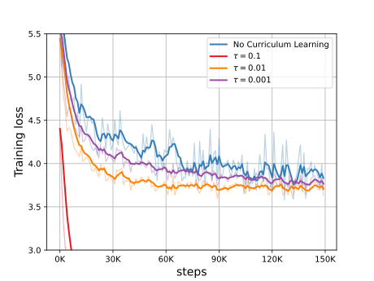
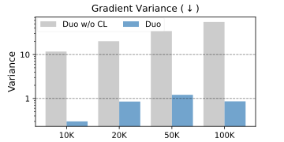
附录表 4 给出了更完整的数字。“方差最大的 100 个权重”的梯度方差之和，有课程 / 无课程在第 1 万、2 万、5 万、10 万步分别是 0.30 / 11.7、0.85 / 20.09、1.21 / 34.2、0.86 / 55.1；第 50 万步课程即将结束时是 1.15 / 1.92，差距已经很小。全部权重的梯度方差之和在第 1 万步是 2,815 / 10,853，第 50 万步是 948 / 1,678。损失本身的方差从 7.09 / 9.19（第 1 万步）到 4.76 / 5.47（第 50 万步），差得没有梯度方差那么多。
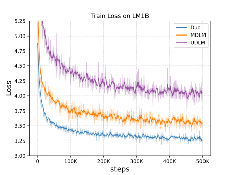
“训练快 2 倍”从哪来。课程结束后，把 Duo 当成离散扩散模型再训练 1 万步（即第 51 万步），它在 LM1B（打包口径）上的困惑度上界已经是 35.2，比训满 100 万步的 UDLM（36.7）还低约 1.5。作者由此说课程让收敛至少快了 2 倍。
似然。训满 100 万步后的测试困惑度如下（原文表 1）：
| 类别 | 模型 | LM1B（不打包） | LM1B（打包） | OWT |
|---|---|---|---|---|
| 自回归 | Transformer | 22.3 | 22.8 | 17.5 |
| 掩码（吸收态） | D3PM Absorb | – | ≤ 76.9 | – |
| 掩码（吸收态） | SEDD Absorb（重训） | ≤ 32.7 | – | ≤ 24.1 |
| 掩码（吸收态） | MDLM | ≤ 27.0 | ≤ 31.8 | ≤ 23.2 |
| 均匀态 / 高斯 | D3PM Uniform | – | ≤ 137.9 | – |
| 均匀态 / 高斯 | Diffusion-LM | – | ≤ 118.6 | – |
| 均匀态 / 高斯 | SEDD Uniform | ≤ 40.3 | – | ≤ 29.7 |
| 均匀态 / 高斯 | UDLM（重训） | ≤ 31.3 | ≤ 36.7 | ≤ 27.4 |
| 均匀态 / 高斯 | Duo | ≤ 29.9 | ≤ 33.7 | ≤ 25.2 |
数字取自原文表 1，“≤”表示扩散模型报告的是困惑度上界，自回归模型的是精确值。原表还有 BERT-Mouth（142.9）与 DiffusionBERT（63.8）两行，都在 LM1B 打包口径下；BERT-Mouth 与 Diffusion-LM 的数字转引自 DiffusionBERT 论文。LM1B 打包口径下的自回归 22.8 与 MDLM 31.8 转引自 BD3-LM 论文。加粗为扩散模型中每列最好的数和 Duo 所在行。
在均匀态 / 高斯这一组里，Duo 在三列上都是最好的：相对 UDLM，三列分别降低 1.4、3.0、2.2（推算）。但它仍落后于掩码扩散 MDLM：三列的差距分别是 2.9、1.9、2.0；离自回归模型更远，分别是 7.6、10.9、7.7（推算）。作者另外在 LM1B 上重训了高斯扩散的 Plaid，训练 10 万步时困惑度 89.9，同样步数的 Duo 是 43.0；因为 Plaid 的开源代码太慢、没能训完，这个结果没有放进表里（附录 C.1）。
零样本似然。把在 OWT 上训练的模型，不做任何微调，拿去评估 7 个其他数据集的验证集（原文表 2）：
| 模型 | PTB | Wikitext | LM1B | Lambada | AG News | Pubmed | Arxiv |
|---|---|---|---|---|---|---|---|
| 自回归 Transformer | 82.05 | 25.75 | 51.25 | 51.28 | 52.09 | 49.01 | 41.73 |
| SEDD Absorb | ≤ 100.09 | ≤ 34.28 | ≤ 68.20 | ≤ 49.86 | ≤ 62.09 | ≤ 44.53 | ≤ 38.48 |
| D3PM Absorb（1.3M 步） | ≤ 200.82 | ≤ 50.86 | ≤ 138.92 | ≤ 93.47 | – | – | – |
| MDLM | ≤ 95.26 | ≤ 32.83 | ≤ 67.01 | ≤ 47.52 | ≤ 61.15 | ≤ 41.89 | ≤ 37.37 |
| SEDD Uniform（重训） | ≤ 105.51 | ≤ 41.10 | ≤ 82.62 | ≤ 57.29 | ≤ 82.64 | ≤ 55.89 | ≤ 50.86 |
| Plaid（1.3M 步） | ≤ 142.60 | ≤ 50.86 | ≤ 91.12 | ≤ 57.28 | – | – | – |
| UDLM（重训） | ≤ 112.82 | ≤ 39.42 | ≤ 77.59 | ≤ 53.57 | ≤ 80.96 | ≤ 50.98 | ≤ 44.08 |
| Duo | ≤ 89.35 | ≤ 33.57 | ≤ 73.86 | ≤ 49.78 | ≤ 67.81 | ≤ 44.48 | ≤ 40.39 |
数字取自原文表 2。自回归、SEDD Absorb、MDLM 的数字转引自 MDLM 论文；D3PM Absorb 与 Plaid 转引自 SEDD 论文，它们训练了 130 万步，其余模型 100 万步。
Duo 在全部 7 个数据集上都好于 SEDD Uniform、UDLM 和 Plaid。和掩码扩散比，Duo 在 4 个数据集上好于 SEDD Absorb（PTB、Wikitext、Lambada、Pubmed），只在 PTB 上好于 MDLM。和自回归模型比，Duo 在 Lambada（49.78 对 51.28）、Pubmed（44.48 对 49.01）、Arxiv（40.39 对 41.73）三个数据集上更低，这就是摘要里“7 个里赢 3 个”的来源。
消融：两项改进各值多少。原文表 3 在 LM1B（打包口径）上拆开看：完整的 Duo 是 33.7；去掉课程（只保留式 17 的目标）是 35.0；再把目标换回原来的写法，就退化成 UDLM，是 36.7。作者据此说，3 个点的改进大约 1.7 个来自新的目标写法，1.3 个来自课程。去掉课程的 Duo 也已经好于此前所有的均匀态和高斯扩散模型。
6.3 未蒸馏模型的样本质量
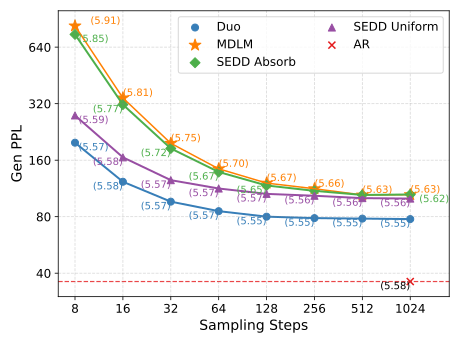
| 步数 T | Duo | SEDD Uniform | MDLM | SEDD Absorb |
|---|---|---|---|---|
| 1024 | 77.69（5.55） | 99.90（5.56） | 104.85（5.63） | 105.03（5.62） |
| 128 | 80.02（5.55） | 105.82（5.57） | 120.77（5.67） | 117.28（5.65） |
| 32 | 96.19（5.57） | 125.21（5.57） | 196.79（5.75） | 184.71（5.72） |
| 16 | 122.78（5.58） | 165.66（5.58） | 343.33（5.81） | 316.33（5.77） |
| 8 | 198.27（5.57） | 276.89（5.59） | 830.82（5.91） | 748.37（5.85） |
生成困惑度（括号内为样本熵），取自原文附录表 5，祖先采样，float64。
1024 步时，Duo 的生成困惑度 77.69，比 MDLM 的 104.85 低约 26%（推算），熵则是 5.55 对 5.63。8 步时差距拉大到 198.27 对 830.82。掩码模型步数越少熵越高，这不是“更有多样性”，而是每步要同时揭开很多位置、彼此独立地猜词，生成的文字前后不连贯。未蒸馏时，所有扩散模型都离自回归模型（约 36，读图）很远。
6.4 蒸馏之后：几步能生成
设置。Duo 在 OWT 上用 DCD 蒸馏；对照组是作者按 SDTT 原始配方蒸馏的 MDLM。两边都蒸馏 5 轮、每轮 1 万步，DCD 的 \(\delta\) 从 \(1/512\) 开始每轮翻倍。
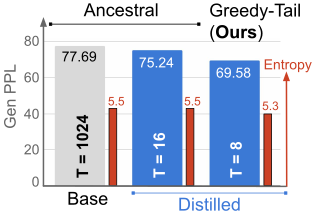
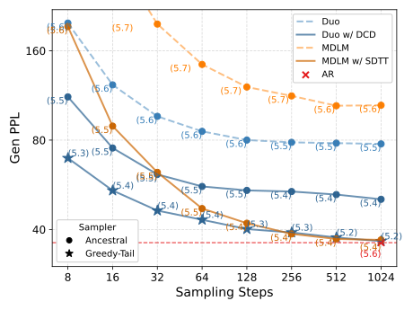
| 步数 T | MDLM + SDTT（祖先） | Duo + DCD（祖先） | Duo + DCD（Greedy-Tail） |
|---|---|---|---|
| 1024 | 36.89（5.39） | 50.55（5.36） | 36.53（5.19） |
| 256 | 38.65（5.41） | 53.69（5.43） | 39.08（5.26） |
| 64 | 47.04（5.45） | 55.83（5.49） | 43.12（5.35） |
| 32 | 62.29（5.49） | 61.31（5.52） | 46.31（5.38） |
| 16 | 89.17（5.53） | 75.24（5.53） | 54.11（5.37） |
| 8 | 193.05（5.58） | 111.88（5.52） | 69.58（5.30） |
蒸馏 5 轮后的生成困惑度（括号内为样本熵），取自原文附录表 7。作为对照，未蒸馏时 8 步分别是 830.82（5.91）、198.27（5.57）、121.89（4.91）。
用同一种采样器（祖先采样）比较，蒸馏后的 Duo 在 32 步及以下好于蒸馏后的 MDLM，8 步时是 111.88 对 193.05，两边的熵也接近（5.52 对 5.58）。作者的解释是：掩码模型每一步独立地揭开很多位置，揭开就不能改，步数少时冲突无法修复；均匀态模型后面的步骤还能改前面的错。步数多时情况反过来：64 步及以上，MDLM + SDTT 更好，1024 步时达到 36.89，和自回归模型的生成困惑度相当，但熵是 5.39，低于自回归的约 5.6，多样性有所下降。
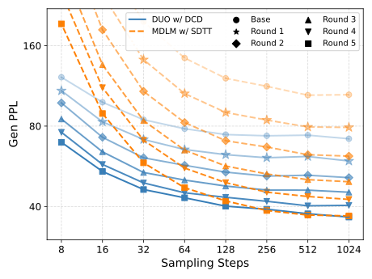
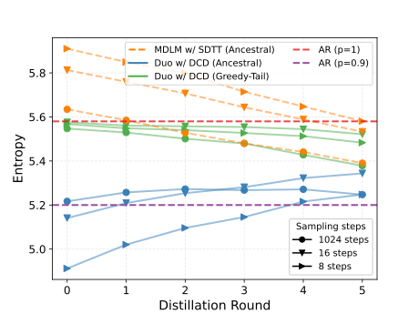
老师用当前权重还是 EMA 权重。一致性模型的惯例是用 EMA 权重当老师，DCD 改成了用每轮开始时的当前权重。作者把老师换回 EMA 权重做对照（算法 2）：
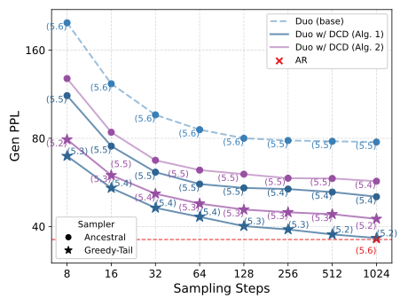
6.5 结果的份量
这一小节把上面的数字放回它们的比较条件里。
和自回归模型比，对齐了什么。骨干网络（约 1.7 亿参数的 DiT）、数据、分词器、上下文长度都是对齐的。表 2 的自回归数字直接取自 MDLM 论文；MDLM 精读页 5.8 节 指出，那个自回归基线是按“计入损失的 token 数”对齐的，它到底训练了 50 万步还是 100 万步，从 MDLM 论文里无法确定。“7 个零样本数据集里赢 3 个”有三层折扣：扩散模型报告的是上界，自回归是精确值；赢的三个（Lambada、Pubmed、Arxiv）恰好也是 MDLM 和 SEDD Absorb 赢过同一个自回归基线的三个，说明这更像这组扩散模型在该评测设置下的共同特点，而不是 Duo 独有的优势；在训练分布内的 OWT 上，Duo 的 25.2 离自回归的 17.5 还很远。
和掩码扩散比，似然仍然落后。摘要和正文说 Duo 把与吸收态扩散的差距“缩小到 2 个困惑度点以内”，按表 1 只在 LM1B 打包口径（1.9）上严格成立；OWT 上正好是 2.0，LM1B 不打包口径上是 2.9。论文结论也承认均匀态在困惑度上仍不如掩码扩散。
“训练快 2 倍”是怎么量的。它是 LM1B 上的步数比较：Duo 第 51 万步（35.2）对 UDLM 第 100 万步（36.7）。但这里同时混入了“新的目标写法”和“课程”两项改进。更干净的读法是对照表 3：不用课程、只用新目标的 Duo 训满 100 万步是 35.0，用课程的 Duo 在第 51 万步就到了 35.2，这才是课程单独带来的大约 2 倍步数节省（推算）。同时，课程阶段每一步要为每个位置造一个 \(K\) 维高斯向量（4.2 节），单步更贵；论文没有报告墙钟时间。
生成困惑度要和熵一起看。所有扩散模型都用 float64 采样，并报告了熵，这一点做得规范。未蒸馏时，Duo 的熵（5.55）略低于自回归（5.58），MDLM（5.63）略高，熵的差别不大，所以 Duo 相对 MDLM 的生成困惑度优势（77.69 对 104.85）大体可信，但其中多少来自熵的差别，论文没有给出熵对齐的比较。Greedy-Tail 的数字则必须打折扣：它把熵压到 5.2–5.3（未蒸馏 8 步时甚至 4.91），和核采样 \(p=0.9\) 的自回归模型（约 5.2，读图）相当，应该和那种设置的自回归模型比，而不是和不截断采样的自回归比。摘要里“8 步”的头条数字 69.58 是 Greedy-Tail 的（熵 5.30），和 MDLM + SDTT 的 8 步 193.05（熵 5.58）并不在同一个熵水平上；熵相近的同口径比较是祖先采样的 111.88 对 193.05，Duo 仍然明显更好。
步数不等于速度。论文只报告网络调用次数，没有报告任何墙钟时间、硬件或生成时的批大小。Duo 每一步都是对 1024 个位置的完整双向前向计算，没有 KV 缓存；自回归模型的 1024 步每步只算一个新 token 并复用缓存。所以“16 步”不等于“比自回归快 64 倍”，论文也没有这样声称，它的“两个数量级”是相对 Duo 自己的 1024 步。
对手是怎么来的。MDLM + SDTT 是作者自己按 SDTT 原始配方蒸馏的（附录 C.8 写的是“在 LM1B 上蒸馏 MDLM”，而正文的蒸馏实验都在 OWT 上，可能是笔误）；SEDD Uniform 和 UDLM 是作者重训的；Plaid 在 LM1B 上只训了 10 万步（不入表），表 2 里 Plaid 的数字来自 SEDD 论文、训练了 130 万步，对 Plaid 有利。
规模与任务。所有结论都来自约 1.7 亿参数的模型、LM1B 和 OWT 两个数据集、困惑度和无条件生成两类指标；没有条件生成、没有下游任务、没有更大规模的验证。均匀态扩散在更大规模上表现如何，要看后续工作（第 8 节）。
- 图 12 的图例中，祖先采样与 Greedy-Tail 两条线的颜色标注与表 7 的数字对不上（见图 12 的说明）。
- 附录图 13 的标题写 8 步 Greedy-Tail 样本“生成困惑度 121.02、熵 4.91”，表 7 对应的是 121.89；图 14 标题写 1024 步“72.05、5.22”，表 7 是 71.72。差别很小，可能来自不同批次的采样。
7 相关工作、结论、局限与未来工作
相关工作。论文把离散数据上的扩散分成两条路。一条直接在离散空间里做，如 D3PM、SEDD、MDLM、UDLM、BD3-LM；另一条把 token 映射成连续的词嵌入，在嵌入上加高斯噪声，如 Diffusion-LM、SSD-LM、CDCD、Plaid。Duo 两边都用：高斯扩散直接定义在 one-hot 表示上（不是嵌入上），离散一侧是均匀态扩散；训练时在高斯隐变量上采样，最后的模型和评测都在离散一侧。蒸馏方面，高斯扩散的蒸馏方法（渐进蒸馏、一致性模型）都依赖确定性的 PF-ODE 轨迹，离散扩散没有；SDTT 沿随机轨迹蒸馏，DCD 则在高斯空间构造确定性轨迹再取 argmax。“用 softmax 退火近似 argmax”这个技巧来自 Gumbel-softmax 一类的工作，原本是为了让梯度穿过 argmax；Duo 把它换了个用途：先证明离散 NELBO 可以写成高斯隐变量的 argmax，再把这个 argmax 放松，得到“干净词与噪声词的叠加”作为输入。
结论。作者的总结是：这层理论联系让均匀态扩散的训练快了 2 倍、采样快了最多两个数量级；均匀态在困惑度上仍落后于掩码扩散，但在少步生成上胜出。
局限（7.1 节，v3 新增）。课程有两个超参数：控制 argmax 放松程度的 \(\tau\)，和课程持续多久。同一套设置在 LM1B 和 OWT 上都好用，换到其他领域可能需要手动调；没条件调的话，作者建议干脆不用课程，只用式 (17) 的目标，它也已经好于此前的均匀态方法。
未来工作（7.2 节，v3 新增）。作者列了两个基于定理 3.1 的方向：
- 更好的引导。离散采样器每一步都要落成离散 token，这对“用分类器梯度引导生成”（如药物发现、分子生成中最大化一个可微分的奖励）不友好；高斯采样器可以让分类器的梯度在整个生成过程中逐步累积，但样本质量不如离散采样器。可以在离散空间采样，同时借底下的高斯隐变量累积分类器梯度，通过式 (15) 去引导离散采样器。（引导与可控生成的背景见 Diffusion-LM 精读 5.1。）
- 高斯式的去噪器参数化。附录式 (44) 把离散去噪器写成了高斯空间去噪器的函数，这样就可以把 \(\epsilon\) 参数化、速度（\(v\)）参数化直接搬进离散去噪器，可能得到更好条件化的网络、降低训练和采样成本。
8 后来怎么样了
Duo 之后，“均匀态扩散是否只能做配角”成了扩散语言模型里一个被认真讨论的问题。作者把这项工作做成了一个系列，官方仓库 s-sahoo/duo 同时收录了第一、二章的代码。几条直接相关的后续工作（摘要内容经本站在 arXiv 上核对）：
- 第二章：Ψ-samplers（Deschenaux、Gulcehre、Sahoo，arXiv 2602.21185 ↗，ICLR 2026）。针对“均匀态模型用祖先采样时，步数再多质量也上不去”的问题，提出一族适用于任意噪声过程的预测—校正采样器；在 OWT 上做到相同 unigram 熵下更低的生成困惑度，在 CIFAR-10 图像上得到更好的 FID/IS，并且步数增加时质量继续提升。同一篇还给课程阶段做了一个省显存的版本，摘要称训练时间减少 25%、显存减少 33%，困惑度相当——正好回应了 4.2 节说的课程开销。
- Scaling Beyond Masked Diffusion Language Models（Sahoo 等，arXiv 2602.15014 ↗）。第一个针对均匀态与插值类离散扩散的扩展律研究。结论是：困惑度在同一族模型内部有参考价值，跨族比较可能误导；扩到 17 亿参数时，均匀态扩散验证困惑度更差，却在 GSM8K 上超过了自回归和掩码扩散。具体的计算量倍数与评测条件，旧版拆解页有整理：均匀态的扩展律。
- Scaling Behavior of Discrete Diffusion Language Models（arXiv 2512.10858 ↗）在掩码与均匀噪声之间平滑插值来研究扩展律，摘要称：算力受限时各种噪声收敛到相近的损失，而均匀扩散做到计算最优需要更多参数、更少数据，并把均匀扩散模型做到了 100 亿参数、\(10^{22}\) FLOPs。
- Sumi（arXiv 2606.19005 ↗）：一个完全开源、从零预训练的 70 亿参数均匀扩散语言模型，训练 1.5 万亿 token；摘要称在知识、推理、代码基准上与同等 token 预算的自回归模型相当，常识类基准较弱。
- 工业界的进展（例如采用均匀噪声的模型）整理在旧版拆解页：均匀噪声走向工业。
在本站的扩散 LLM 精读里，可以接着读：MDLM（本文的主要对照，同一个团队的掩码扩散工作）、SEDD（score entropy，本页 3.4 节说明均匀态 NELBO 与它同形）、BD3-LM（裁剪噪声调度的来源）、离散流匹配（把均匀源和校正器纳入同一个框架）。想看 Duo 的架构图、伪代码、与自回归模型的对照表和配套简答题，见旧版结构拆解页。
作者
单位按论文署名。背景只列可公开查证的信息：作者主页、实验室与机构页面，以及论文本身。
影响力
- 引用：见页首（Semantic Scholar 快照）。
- 开源：s-sahoo/duo 仓库 245 个 star、35 个 fork（截至 2026-10-20），Apache-2.0 许可；仓库创建于 2025-02-18，基于 MDLM 的代码库；第一章的原始代码在
ch-1分支，主分支同时包含第二章的采样器与省显存课程。Hugging Face 上发布了 OWT 上训练的基础模型和蒸馏模型，另有 Colab 演示与视频教程。 - 发表：ICML 2025（PMLR 267）。第一作者主页另写明它是 ICLR 2025 DeLTa 研讨会的口头报告。
- 后续：作者把它发展成“Diffusion Duality”系列，第二章 Ψ-samplers 发表于 ICLR 2026；均匀态扩散的扩展律研究和从零训练的 7B 均匀扩散模型也相继出现（第 8 节）。
延伸阅读
- 同一类的扩散 LLM 精读：D3PM（转移矩阵框架，均匀与吸收两种加噪的出处）· SEDD（score entropy，均匀态与吸收态的对照）· MDLM（掩码扩散的简化目标）· Diffusion-LM（在嵌入空间做高斯扩散）· 离散流匹配 · BD3-LM · LLaDA
- 旧版扩散 LLM 路线：均匀态扩散与 Duo 结构拆解（架构图、伪代码、简答题）· 从头讲起 · MDLM 与 MD4 · 离散流匹配
- 少步生成背景：一致性模型 · 少步生成路线
- 返回论文书架
本页是对论文的中文精读笔记，正文为本站撰写，并非翻译。数字与结论以原文为准：arXiv:2506.10892（本页依据 v3）。标为“原文图”的图片取自 Duo 论文（Sahoo et al., 2025），论文以 CC BY 4.0 许可发布，图片未做修改。标为“示意图”的图由本站绘制；标为“本站数值计算”的曲线由本站按论文公式计算。